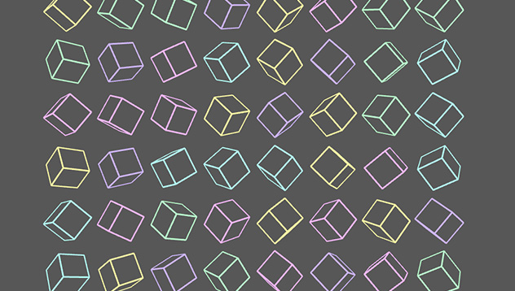
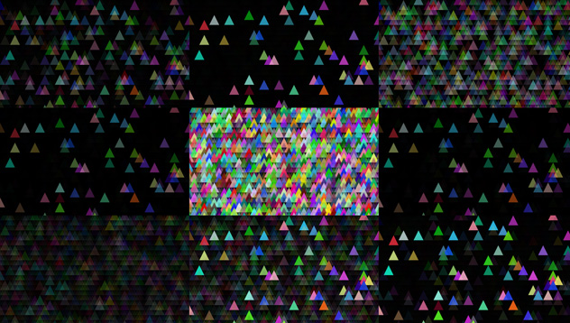

Visuals
I've been mucking around with Processing a bit recently. It's really good fun.
Weird results will be posted here, mainly audio reactive visuals and generative art.
Henrik Schwarz - Walk Music Four
Sigur Ros
Spirals 4
Spirals 3
Highway Superstar
Cubes de Joanie
{kind=link}
Inspired by some plotter drawings by the very awesome Joanie Lemercier (who was in turn inspired by Sol DeWitt) I made some spinning cubes. Colour is randomly picked from a palette of four pastel shades, the cubes all spin around x, y and z. X axis spin is increased by the position of the cube in the pool.
Click on the image to see the 16mb gif (!) above, or see on Instagram here.
Claude's Colour Flash
{kind=link}
Playing with patterns and sound. Triangle colours randomly generated, and the alpha set by the amplitude of different bands of the audio in Claude Vonstrokes's 'Eye i Eye'. Exported nine frames out at random times and put them together.
Click on the image or here to view and download the fullsize image.
Spinning Cube of Mind Games
Two cubes spin based on x, y, z, and speed is from frequency of different parts of the audio. Red and blue point lights in the corners which change z depth based on bass (lol), and one in the middle of the cube with rgb values that change colour randomly based on frameCount and other things. Cube opacity changes from amplitude of bass.
Track is Hodge - Mind Games. Hope you don't mind Jake!
NB I wanted to try using ProcessingJS/p5js so removed all the Hype stuff from this build, but then couldn't figure out how to export/change it yet.
StephDoug
It was my good friend Steph's birthday, so I decided to make her Something weird involving her face, her cat, and some basics I learned on the Painting with Sound III course. Uses Hype, so can't currently figure out how to export for web properly so you will have to do with this video.
Oscillates at a speed based on the frequency band, colours also set by different frequency bands in the song, and size of sprite changes with amplitude.